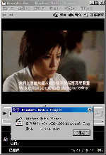
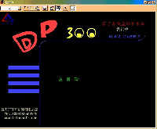
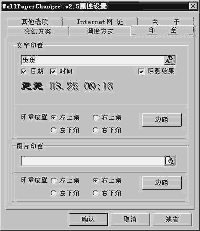

|
|
| 当前位置：电脑报电子版 > 1999 年 > 34 期 > 软件世界 > 走在升级的路上 |
| 《 走在升级的路上 》 |
| 大家好！歪歪很久没和大家见面了，因为正在准备去读书学习。但是不管在什么地方，我们的“歪歪线报”还是会一直写下去的。歪歪请大家继续支持突突、贝贝和我热爱着的《电脑报》。以后，有关软件版的问题请写信到software@cpcw.com，当然如果有好的软件和需要我歪歪帮忙的，还是那个老信箱：yy.y@263.net。 好了，让我们来看看最近有什么新东西。歪歪看了上期唐朝写的文章，才发现微软最近出了好些东西，歪歪马上在微软的网站上呆了一天一夜，又给大家找了不少（题外话：请微软加强IE对微软网站的支持，能不能让ASP快一点。）首先是微软最新公布了媒体播放器的最新版本6.4（http://www.microsoft.com/windows/mediaplayer/en/download/Win32IE4x86.asp），并提供各种语言版本下载，在下载的页面上提供了玛丽娅凯丽的最新单曲《Heartbreaker》在线试听。(玛丽娅凯丽以13首冠军单曲的成绩超出麦当娜,稳坐欧美流行音乐女歌手第一把交椅。她那如金属般直入人心的嗓音、令人难以置信的音域、运用自如的演唱技巧,把我们带入了一个全新的世界......)“歪歪，你歪到哪里去了。”突突大吼道。好好，我们开始谈谈Microsoft Media Player 6.4版，它几乎支持 Windows 下的所有多媒体文件格式，包括 MP3格式。这个版本已经把过去只有RealPlayer及Quicktime才能播放的文件格式通通都包括进来了！ 相信大家和歪歪一样明白了微软的意图。歪歪提醒你，在下载的时候别忘了选择简体中文版本。还有一个相关的消息， 微软近日发布了Windows媒体音频格式(WMA)，准备替代现在十分流行的MP3技术，WMA 文件可被编码成具有在特定时间段播放、或是限制播放次数等功能。几乎与此同时，黑客也找出了能消除所有回放限制的软件，并在新闻组和IRC聊天室中公开。看来，微软最大的敌人就是黑客了。 DirectX7.0和DirectX8.0 说完媒体播放器，这周微软的DirectX 7.0 Beta2（http://www8.silversand.net/nethome/newhua/down/dx7b2.exe）也可以下载了。绝大多数DirectX 7.0的工作是为了配合 Windows 2000。事实上,Windows 2000将是下一个针对游戏制造商的目标平台。而DirectX 7.0的目标就是让制造商用Windows 2000 作为平台,当然DirectX 7.0仍然针对了基于Windows95/98的游戏。如果你是一个狂热的玩家，可以升级到DirectX 7.0，其他的用户还是等等好。DirectX7.0出来后,自然就是DirectX8.0了。歪歪用很歪的英文水平特意给大家翻译了一些 DirectX8.0的前景资料。DirectX8.0将启动一些由微软和SGI共同研制的Fahrenheit技术（包括惠普提供的一些技术）。不过问题在于虽然Fahrenheit技术用在CAD和3D模拟时是很出色的技术,但它不能满足玩家的需求。 Bachus(DirectX制作小组成员)承认了这点,他指出DirectX制作小组正在努力确保Fahrenheit技术也能很好地适应游戏的制作要求。DirectX小组正在找寻更紧密地集成Direct3D 和DirctDraw、DirectMusic和DirectSound、DirectPlay 和Winsock的办法。简化、简化、再简化是DirectX8.0的一个主题。 DirectX 8.0的发布虽然还有些日子，现在它看上去已经有了许多重大的变化，而且将OpenGL 集成为Fahrenheit API的一部分。当前的想法是提供一种Scene Graph API技术（来自SGI和HP的技术，运用一种可扩展的COM结构并提供多处理器的支持），它是一种API技术，来自于 DirectDraw/D3D和OpenGL的结合。Scene Graph API技术将是一种轻量级的、向下兼容的API接口：具有灵活的框架并带有可扩展性，允许为特别的硬件和游戏量身定制。这种API接口有意与现存的DirectX应用程序和驱动程序完全兼容。目前正在考虑的DirectX 8的其他特性如下：1.增强对平行性的支持；2.减少常规操作的复杂性，增加转换、表面管理和轮廓工具；3.更直接地访问内存结构；4.更全面地剪辑操作；5.环境映射和几何混成；6.过滤和图形保真；7.支持对数字音效的即时效果处理，对压缩数据的支持；8.多频道WAVE文件支持；9.AC－3解码；10.3D 音效环境模拟。 国产软件 上周陈三公子提到一个中国共享软件网站http://cnshare.yeah.net,歪歪去看了，非常激动，中国共享软件终于有了自己的家，歪歪在上面找到了好多国产软件(呵呵，以后歪歪不用到处去找国产软件了）：DP300（测试版，47K,http://dp300.yeah.net/）(图2)是对学校带硬盘的单机、网络有盘工作站、家庭电脑的硬盘及软件的常规及特殊维护而开发的一个集操作系统的保护、文件的保护、硬盘的保护、硬盘的复制、网络硬盘管理、常规操作系统设置为一体的硬盘维护系统。最大限度地解决现在学校及家庭电脑用户反映的“现在的硬盘太难管理"的问题，（歪歪提醒在使用前必须看说明文档）。《网海拾贝》（免费软件，http://liusng.163.net/）是一款功能强大的“电子书库”类的个人文档收藏管理工具，同时也是一款与众不同的剪贴板工具。除了拥有一般电子书库的文档（包括图片）收集、整理、查找、编辑、阅读和导出功能外，《网海拾贝》充分利用了Windows的剪贴板，将文档收藏管理和与超强的剪贴板功能（类似ClipCache）结合起来，不论是平日或是上网时，它都能让你非常方便地收集想要保存的资料，分门别类地管理。《聪明搬运工》（免费软件,http://cnshare.yeah.net)，《聪明搬运工》是七巧板工作室为庆祝成立两周年的纪念作品，属解谜益智类游戏，漂亮的场景、动听的音乐、越到后来越难的关卡，是对你脑力极大的挑战。游戏的目标是将所有物品归位到标记处，请使用键盘方向键来控制人物的移动，每次只能移动一个物品。呵呵，歪歪玩这个是很厉害的！歪歪最后向大家推荐的是桌面墙纸管理软件WPC(图3)（共享软件，1Mhttp://www.hu.zj.cninfo.net/～wangyin/wpc/wpcv25ch.exe),WPC曾受到网易壁纸站的推荐。歪歪在使用了国外的诸如WallMast、CaleDOS、XDeskTOP等墙纸切换工具以后，发现中文的壁纸管理软件WPC2.5更加厉害。WPC除了基本的搜索、整理壁纸、自动切换壁纸的功能之外，还可以方便地对壁纸进行批量转换，做到随意切换。独特之处还在于能够在壁纸上敲上印章（文字或图形），利用这一功能，用户可以方便地在壁纸上印上自己的名字、收藏标志等。 关于注册 也许是《电脑报》的夏日特刊大力推荐编程的作用。现在的国产共享软件越来越多，这是一个让歪歪感到很高兴的事，不过歪歪刚刚收到UpdateNOW!的作者张研的来信，他告诉歪歪现在网上有中国人做的专门破解国产软件的网站。这真的很可怕，不管怎么说，我们的开发者的注册费非常低，而且开放的功能也很多。其实，注册是一种支持，歪歪知道一个故事，SearchX的作者陈耀华（http://searchx.yeah.net)的父母都下岗了，全家依靠陈耀华一个人的收入生活，当歪歪打电话到他们家，纯朴的老人问我：“我们不懂,他做这个有前途吗，我们都下岗了。他一个月的上网费要花掉四五百元。”歪歪无言以对。他的这个软件只要10元注册费，并可以退款。现在在中国做共享软件的人，大都还是那些理想主义者。他们付出的是上百上千个小时的辛勤劳动，需要的回报只是给他们一个可以继续生存和开发的起码的经济基础。请记住：我要注册！ |
| 下载本期推荐软件 | 页 首 |
| 《电脑报》版权所有，电脑报网站编辑部设计制作发布 |